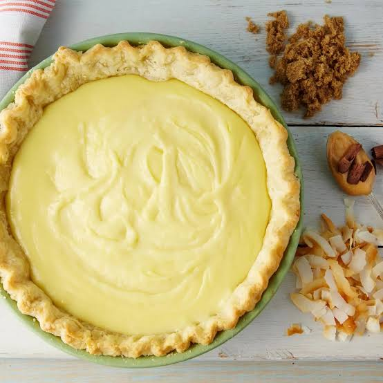

This is a delicious sugar cream pie which cooks the filling prior to being put in a baked shell. Real butter and half and half are must-haves for this to be at its best. People always ask me for the recipe!
Mix cornstarch and sugar. Add 4 tablespoons butter and half and half. Cook over medium heat, stirring constantly, until mixture boils and becomes thick and creamy. Remove from heat and stir in the vanilla.
Preheat oven broiler to high. Pour mixture into pie crust. Drizzle 2 tablespoons butter over top and sprinkle with cinnamon.
Put under broiler until butter bubbles - watch it carefully as it doesn't take long.
Refrigerate pie for at least 1 hour before serving